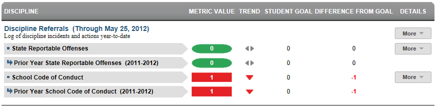
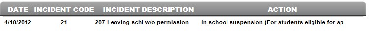
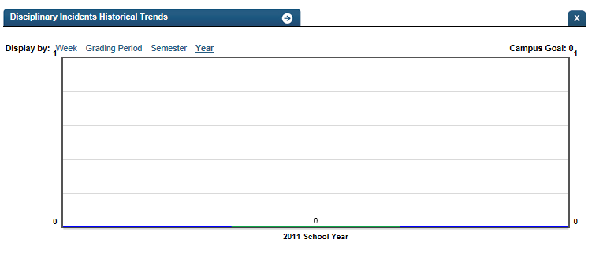

Dashboard Metrics


Discipline Referrals
Background
Student Dashboard Metrics
To enable educators to promptly identify and respond to incidences of student misbehavior, many school districts across the country, including Charlotte, Chicago and Dallas, have incorporated measures of student discipline into their internal performance management dashboards. In focus groups conducted with educators, the Discipline Referrals metric, presented in screen shots of the student dashboard, was considered useful by 97 percent of those surveyed.
Primary Metric
- Discipline Referrals: number of discipline referrals a student has received during the current year by type (all incidents excluding code of conduct incidents), with comparison to campus goal.
Related Metrics
- None.
User Interface
Dashboard Example
Figure 1 shows the Discipline Referrals metric as seen on the student dashboard.

Figure 1 Ed-Fi Discipline Referrals Metric
Status Definition
The Status indicator is determined by campus-specific thresholds (campus goals) which are set at the district level. The default threshold is zero.
The Discipline Referrals metric displays the number of discipline incidents during the current school year-to-date, organized as follows:
- Most serious incidents, excluding School Code of Conduct
- Minor infractions, School Code of Conduct
Metric Indicator | Trend Comparisons | |||
Metric Name | Sub-metric Name | Metric Status Indicator | Compares: | To: |
Discipline Referrals | All Disciplinary Incidents Excluding Code of Conduct | Red (High) = if metric value is equal to or greater than the campus goal Green (OK) = if metric value is less than the campus goal | current year | prior year |
School Code of Conduct Incidents | ||||
Trend Definition
Table 3 lists the trend indicators for the Discipline Incidents metric. For Phase 2, the trend indicators are grayed out; this table is for documentation purposes.
The trend does not display for the first occurrence of the first time frame since data is not available.
Trend Indicators: Objective is to indicate Daily Attendance Rate | |||
| Up green | If the value for the current time frame is more than 5 percentage points higher than the prior time frame | |
| Unchanged | If the value for the current time frame is less than or equal to 5 percentage points higher or less than or equal to 5 percentage points lower | |
| Down red | If the value for the current time frame is more than 5 percentage points lower than the prior time frame | |
Periodicity
Since the number of discipline referrals is a leading indicator of performance, best practice is to load this data on a frequent basis, at least weekly, though there is still some benefit from reviewing it monthly.
Recommended Load Characteristics | |
Calendar | Throughout the school year |
Frequency of data load | Weekly, Monthly |
Latency | 4 weeks |
Interchange schema | Interchange-StudentDiscipline.xsd |
Tooltips
The standard tooltips for the metric definition, column headers, and help functions display for this metric.
The following are tooltips specific to the Discipline Incidents metric:
 is ‘No change from the prior period’
is ‘No change from the prior period’ is ‘Getting worse from the prior period’
is ‘Getting worse from the prior period’ is ‘Getting better from the prior period’
is ‘Getting better from the prior period’
Business Rules
The Discipline Referrals metric displays the total number of discipline incidents for the student during the current school year, as follows:
- All incidents where the student is identified as a “Perpetrator” (i.e., the student who committed the discipline incident) are counted.
- All classifications of incidents are counted and organized into:
- the most serious incidents
- minor infractions
- Discipline incidents are counted, even if no discipline action is recorded.
The student dashboard view can also accommodate listings and groupings of locally-defined incidents.
Data Assumptions
- The campus must record discipline incidents and actions and categorize them by type.
- To enable viewing of this metric as a leading indicator, the data must be updated and loaded frequently.
- While state or district regulations may require certain actions for certain types of incidents, the Ed-Fi dashboards do not validate these rules, but rather displays what has been recorded.
- Transfer students (late enrollees) may not have a complete history of discipline referrals for the current school year.
Computed Values
Table 4 defines how values for discipline incidents are calculated. The actual number of incidents is displayed in the Value column.
Metric Values | ||
Discipline Incidents | All Discipline Incidents Excluding School Code of Conduct | Total number of discipline incidents (excluding School Code of Conduct) |
School Code of Conduct Incidents | Total number of School Code of Conduct Incidents | |
Data Anomalies
Anomalies
- Loading of incident data from each grading period.
- Late enrollees may not have previous discipline incidents from another school.
- Some discipline incidents may spawn two actions, or violate both the school code of conduct and state reportable offenses. These may cause two separate line items in the incident log drill down, or an item for each action taken. This may cause a disparity between the container level metric value (sum of incidents) and the count of line items in the incident log.
- Many Juvenile Justice Alternative Education Programs (JJAEPs) or discipline alternative campuses stop tracking discipline incidents upon a student's arrival, or use a separate system.
- Currently only display current year discipline incidents in the incident log, although prior year metric values may be available.
- Discipline incidents that are recorded on a non-instructional day will not appear in the historical snapshot, because these days are excluded from the district calendar. These will still appear in the incident log.
Best practice is to use footnotes to address these anomalies.
Footnotes
Footnotes are used to provide addition data information concerning the metric. Footnotes are sequential for the entire page. Therefore, a metric's footnote may not begin with the number 1.
The following footnotes appear below the metric:
- Best practice is for developers to footnote students transferring in.
Date of Refresh
Best practice is for the date of last data refresh to appear next the metric in the following format:
- (Through April, 22 2010)
Implementation Considerations
Student Identity
Maintaining a correct and consistent student identity is at the center of any education data system. Most systems use some sort of unique identifier. However, sometimes this identifier is entered incorrectly or sometimes different systems use different identifiers.
The UDM XML supports the interchange of multiple types of identifiers. The StudentReference is a complex type within the UDM to maintain the referential integrity of the student (that is, ensuring that the data associated with each student is accurately associated with the right student). The complex type of the student reference assists with implementing the accurate matching algorithm to identify a student by utilizing any of the individual attributes (e.g., Student Unique State ID, Student ID, Campus Local ID (with Campus ID), Name and Birth Date). For example, if the Student Unique State ID is unknown, you can find the student’s identity by their Student ID, First Name, Last Name and Birth Date.
Late enrollments
For late enrollment students, the full history of discipline referrals may not be available. Best practice is for developers to flag or footnote late enrollees.
Classification of Incidents
The classification of incidents, particularly the most serious incidents, may be driven by state reporting requirements. Ideally, a district incorporates both state and local classification of incidents. The UDM is designed to be extensible to enable a district to map additional classification types.
Thresholds
Best practice is to set campus thresholds at the district level. A secure mechanism is required to allow the district to set and maintain those thresholds.
Drill Downs
Description
An educator can view a student's specific discipline incidents by selecting "+More" in the Details column on the student dashboard. Each incident is sorted by date and includes the type of incident and the action taken. If no action is taken (or recorded), the Action column is left blank.
Drill Down Views
Table 5 lists the drill down views that are recommended for this metric.
| Academic Profile | Basic academic history of student data that gives educators access to a student's strengths and areas of improvement. (Future Implementation) | |
| Details | Graph of logs of incidents and actions of current school year. | |
| Historical | Graph of metric values by year |
Data Mapping
Data Elements
Table 6 lists the additional data needed for the Discipline Referrals metric drill down and its mapping of the data elements from the UDM to the Ed-Fi.
Data Driving the Metrics | UDM Path.Attribute (XML Type) | Ed-Fi Table.Field (Type) |
Discipline Incident Action | ||
Student => DisciplineIncident => DisciplineAction:DisciplineActionIdentifier (string) | Disciplin eAction.DisciplineActionIdentifier (nvarchar) Inc | |
User Interface Notes
Dashboard Example
Figure 2 shows the Discipline Referrals metric drill down as seen on the student dashboard.

Figure 2 Ed-Fi Discipline Referrals Detail
Figure 3 shows the historical drilldown.

Figure 3 Ed-Fi Historical Discipline Referrals Detail
Business Rules
The Historical Graph allows the user to see historical data across multiple timeframes. As time passes, there are many bars to be displayed; therefore, the slider on the bottom allows the user to adjust the number of bars displayed as well as the time period shown. The timeframes for this metric were chosen based on educator feedback.